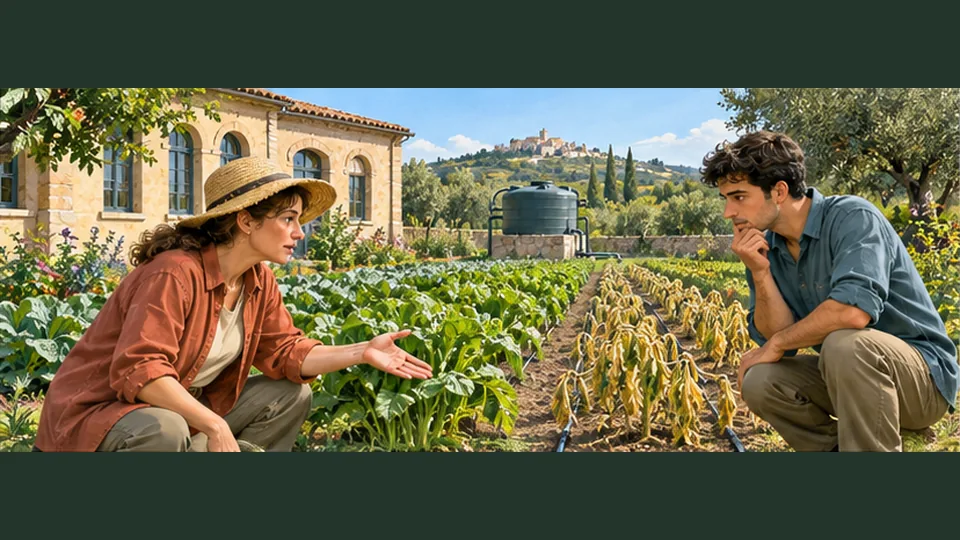

Dal campo al raccolto
Il mistero dei filari asciutti

Destinatari: Tecnologia, seconda annualità della scuola secondaria di primo grado. Durata proposta 25–35 minuti. Riferimento: ECO-02/P1, Agricoltura come sistema tecnologico; allineamento alla versione Arena corrente da confermare. Non costituisce attestazione curricolare o autorizzazione all’uso con studenti.
Finalità e obiettivi
Interpretare l’agricoltura come sistema tecnologico, distinguendo risorse, strumenti, processi, lavoro, risultati e impatti. Confrontare misure in condizioni comparabili, motivare un intervento e trasferire il metodo a un problema nuovo.
Prerequisiti: concetto di risorsa e processo, misura di volume in mL, confronto di quantità. Possibile raccordo: scienze, matematica, uso responsabile delle risorse.
Conduzione
- 5 min: presenta Sara e Luca e raccogli le ipotesi iniziali senza anticipare la causa.
- 8 min: fai esplorare i sei indizi; chiedi il confronto 200 mL e 50 mL nello stesso intervallo.
- 7 min: chiedi una previsione prima della scelta; confronta i tre effetti e la seconda misura.
- 5 min: fai disegnare la catena delle relazioni e una freccia di controllo.
- 5 min: trasferimento al frutteto, due controlli motivati e un risultato che possa smentire l’ipotesi.
Verifica e valutazione formativa
Raccogli sul quaderno o oralmente: componenti del sistema, confronto motivato delle misure, proposta e limiti, due controlli nel nuovo caso. Le scelte nel modello non costituiscono voto automatico. Il docente può chiedere allo studente di confrontare tutte le alternative.
| Indicatore | Iniziale | Base | Intermedio | Avanzato |
|---|---|---|---|---|
| Riconoscere il sistema | Elenca oggetti senza relazione | Distingue alcune componenti | Collega risorse, processi e risultati | Integra impatti e controllo |
| Interpretare evidenze | Confronto non motivato | Riconosce differenza | Usa misure e indizio per spiegare | Distingue ipotesi, limiti e controprova |
| Decidere | Scelta senza ragione | Indica una ragione pertinente | Confronta interventi ed esiti | Giustifica anche vincoli e verifica |
| Trasferire | Ripete la soluzione precedente | Propone un controllo pertinente | Propone due controlli motivati | Esplicita anche un risultato che smentirebbe l’ipotesi |
Accessibilità e limiti
Testi alternativi e indizi equivalenti nell’elenco; niente dipendenza dal solo colore. Lettura condivisa e risposta orale o scritta. Le misure sono dati didattici inventati e non previsioni agronomiche. Le azioni sono scelte nel modello, non istruzioni per intervenire su impianti reali. Le risposte aperte vengono formulate nella sessione volatile e non sono salvate o valutate automaticamente; il docente può discuterle o raccoglierle sul quaderno. Le conclusioni sono accessibili dopo osservazioni e una breve riflessione. Non è presente un simulatore fisico generale.
Provenienza e revisione
Testi originali e cinque tavole narrative generate con intelligenza artificiale, con personaggi di fantasia, ottimizzate e conservate nel repository. Le immagini illustrano il contesto: le misure dichiarate negli indizi e negli stati simulati, non le tacche visibili nei disegni, sono il riferimento quantitativo. Nessun servizio esterno richiesto durante la fruizione, dato personale o costo aggiuntivo. I termini di riuso pubblico dovranno essere verificati prima di pubblicare. Il fascicolo si riferisce alla bozza v0.4 e va riallineato dopo eventuali modifiche alle scene. Storia, prodotto, curricolo e pubblicazione richiedono decisioni distinte. Revisione professionale non acquisita.